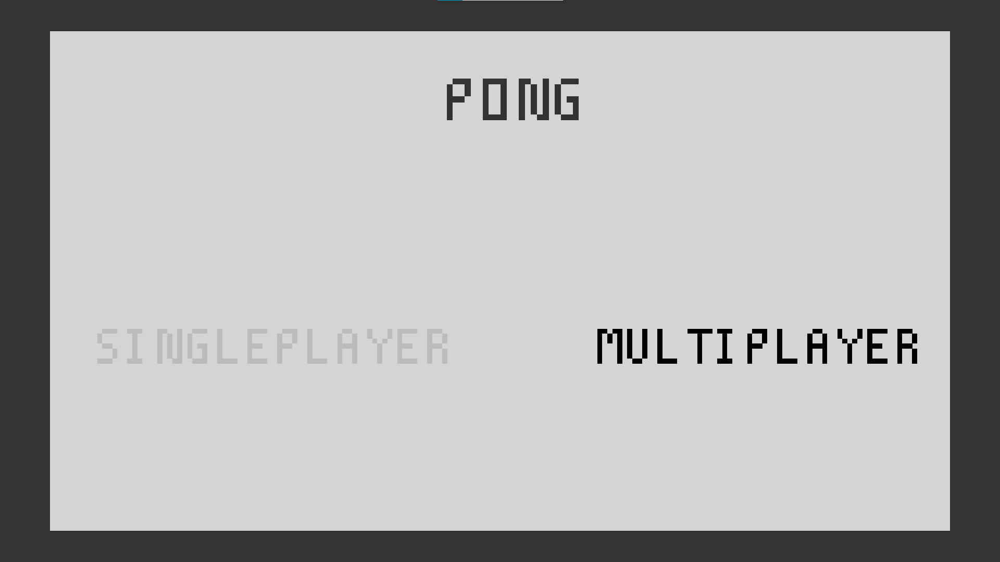
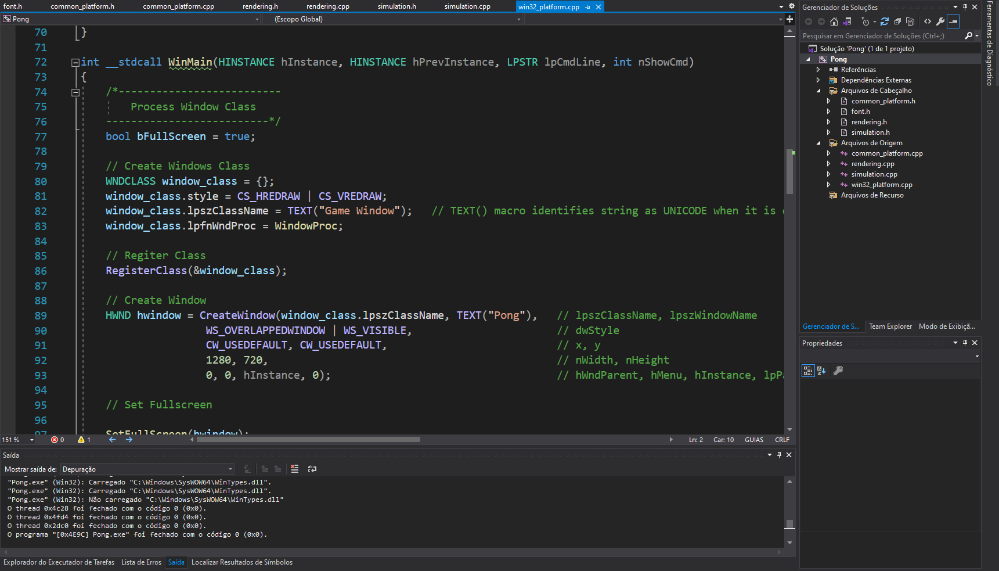
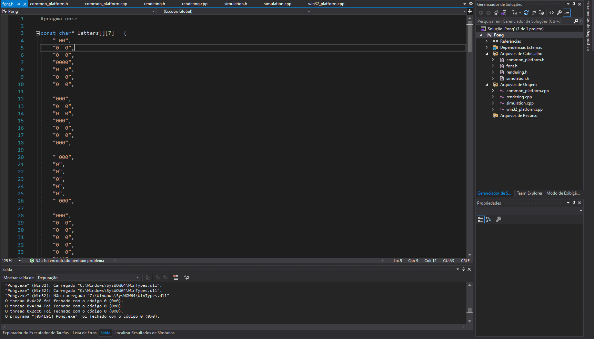
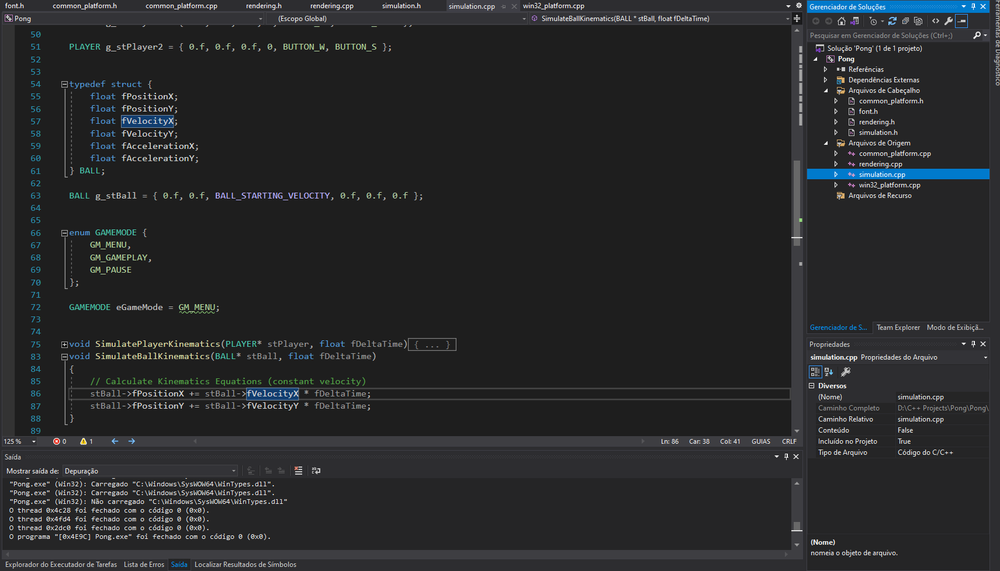
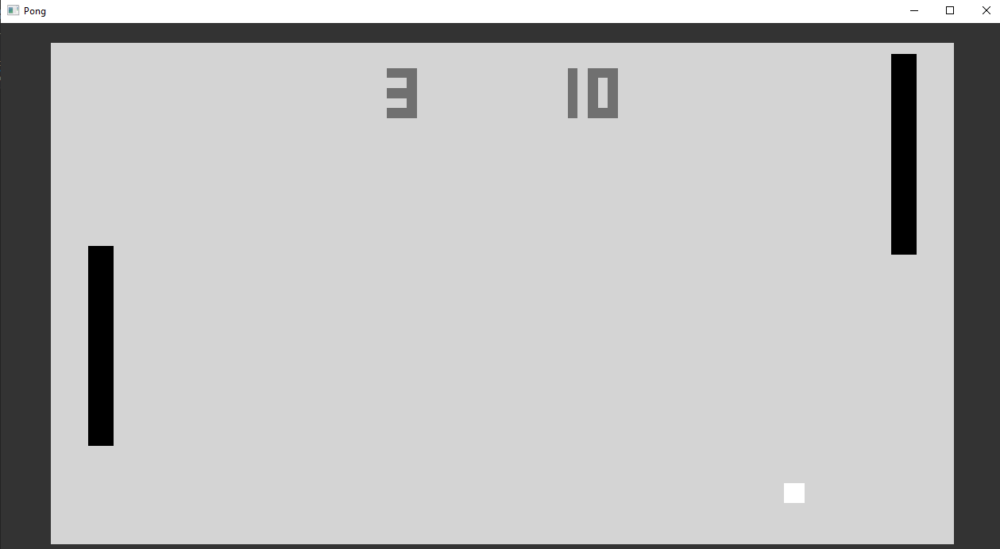

Software
I Developed the 'Pong' videogame from scratch in the C language, for Windows, implementing everything from screen buffering and rendering fuctions to the game and menu logic. Since I did not make use of any graphic libraries or external tools, I also had to implement input handling and window operations.
  Everything was made using the Visual Studio IDE for compiling and building the project altogether
The game logic follows that of the classic Pong game, with a ball going from one side to the other, bouncing off the walls and the players, with its speed increasing each time it does so. Everytime it passes through a player, a point is scored.
There is also a game mode selection in the menu screen. The user can select multiplayer (two people play in the same computer, using different keys in the keyboard) or singleplayer (a very simples artificial intelligence follows the ball so as to bounce it to the other side).